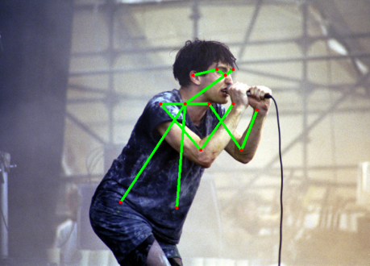
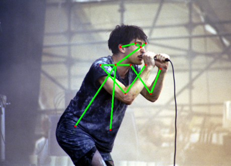
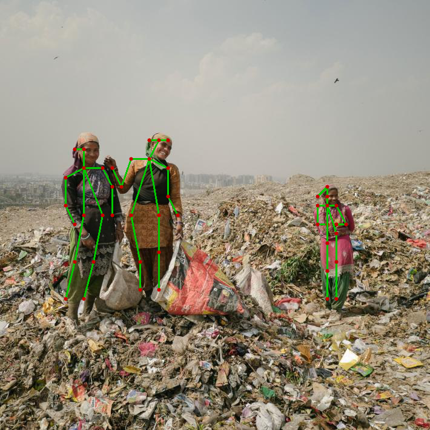

openpose networks
opencv can now import those, they are so cool
 

it even knows, where the fingertips are, though it cannot see them !

with a bit of hacking, it's even possible with multiple persons. (not perfect yet, WIP !)

if we add up all the PAF maps, it even forms little men ;)